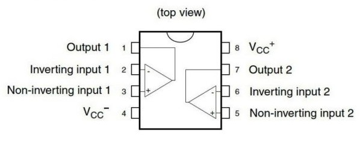
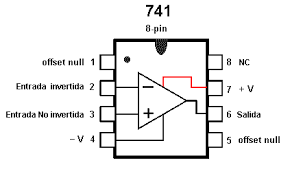

Amplificadores operacionales
TL081, TL082 y LM741
¿Para qué sirven?
Amplifican la diferencia de tensión entre sus dos entradas. Con unas pocas resistencias se arman amplificadores, sumadores, comparadores y filtros, que es lo que hacemos en las prácticas.
Qué hay que comprar

TL081 x 3
Un amplificador operacional con entrada JFET en un integrado de 8 patas.

TL082 x 3
Igual que el TL081 pero con dos amplificadores en el mismo integrado.

LM741 x 2
El amplificador operacional clásico, el que aparece en casi todos los apuntes.